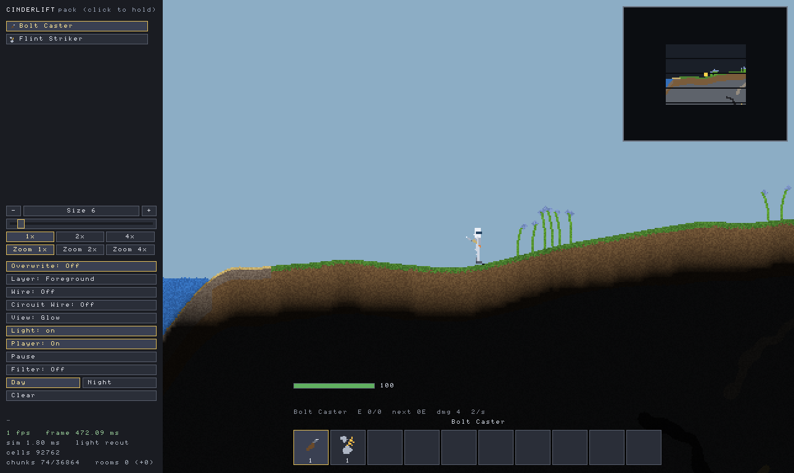
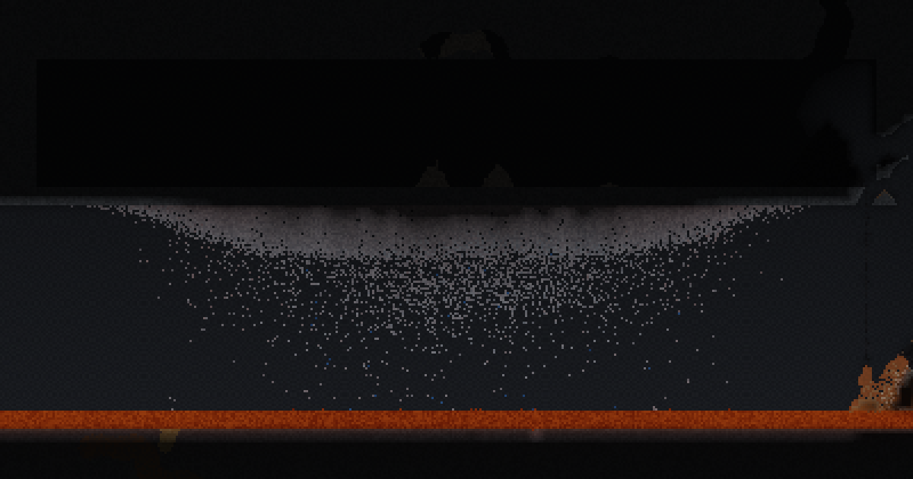
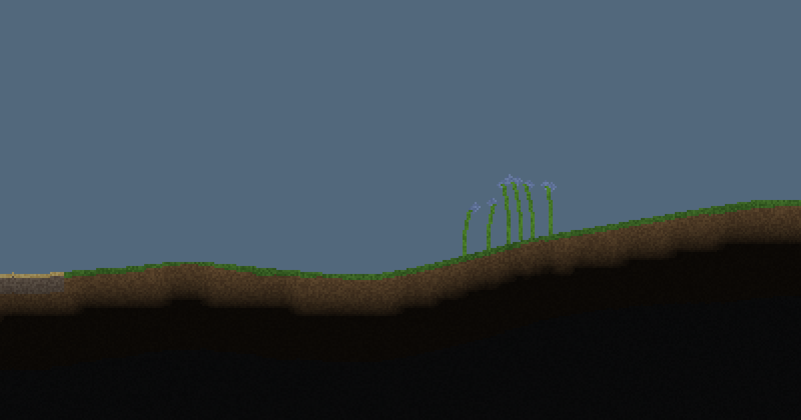

WHAT IT IS
Cinderlift is a falling-sand sandbox where the physics is the game. Every cell in the world carries a material, a temperature and a moisture level, and it is simulated rather than scripted — sand falls, water finds its level, heat conducts through whatever is touching whatever, and things melt when they get hot enough and freeze again when they cool.
You crashed on a planet. Everything below you is rock, ore and the caves between them, and the way out is up — which means digging, smelting, wiring and building your way there.

HEAT IS REAL, AND IT IS THE POINT
Most sandbox games treat fire as a state a tile is in. Here temperature is a number every cell has, conducted between neighbours at a rate the two materials decide, and almost everything interesting is a consequence of that rather than a rule written for the occasion.
- Metals melt and re-freeze. Iron and copper have melting points; molten metal cools back into the solid it came from.
- Water boils where it touches something hot enough, and the steam goes where steam goes.
- Rubber is the best insulator in the game — and it melts at exactly water's boiling point, so it works beautifully right up until you ask it to do anything genuinely hot.
- Graphene has no melting point at all. It is what you line a crucible with when nothing else will survive.
- Acid corrodes, and it pools in the second layer where you will be standing.

WIRES, LOGIC AND MACHINES
Copper conducts. A pulse travels along it as an actual moving thing, splits at junctions, fills a thick wire once rather than flooding back down its own trail, and two waves sent at each other meet and stop.
On top of that there are sensors and actuators: thermocouples that read temperature, clocks, pulse buttons, block watchers, combinators for logic, placers, miners, spouts and drains. Enough to build a furnace that regulates itself, or a pump that runs when a tank is low, or something considerably more ambitious.
THREE LAYERS DOWN
The world is 4096 cells wide and 9216 deep, generated fresh each time, and cut into layers by strata you cannot dig through until you have earned the tools.
- Layer 1 — copper, tin, coal, iron. Warm brown rock. Where you learn the game.
- Layer 2 — gold and titanium, and acid pockets. Cold green. The difficulty step.
- Layer 3 — tungsten, and lava hotspots. Hot red. The deep.
Day and night pass overhead, light propagates properly from the sun and from whatever you are carrying, and it gets very dark down there.

PLAY IT
In your browser, free, right now — scroll back up. Nothing to install, about 1.5 MB, and it runs on any desktop browser.
The Windows download is the fuller version: it keeps saves, and it has direct-IP multiplayer, neither of which a browser tab can do. It is the same game and the same code — the browser build is that code compiled to WebAssembly rather than a cut-down port.
QUESTIONS
Does the browser version save my world?
No. A tab has nowhere durable to put it, so anything you build there is gone when you reload. The Windows build saves normally, in ten slots.
Why is there no multiplayer in the browser?
Multiplayer connects two machines directly by IP, and a browser tab is not allowed to open that kind of connection. Doing it in a tab would mean running a relay server in the middle, which is a thing that has to be paid for and kept alive forever. The Windows build has multiplayer.
Windows says the download is unrecognised.
The executables are not code-signed yet, and Windows warns about anything it has not seen before from a publisher it cannot verify. The launcher is the more suspicious of the two by nature, because updating itself looks exactly like what malware does. Everything is open source — the repository is right there, and every release publishes SHA-256 hashes for both binaries.
What are the system requirements?
A desktop browser, and roughly 350 MB of memory for the world. Phones generally cannot spare that. It runs comfortably on old laptops otherwise.
Is it finished?
No, and it is being worked on steadily. Watch the releases if you want to follow along.